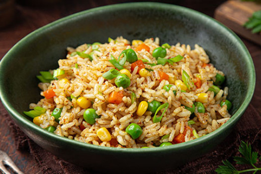

Home
Fried Rice

Description
Fried rice is a very popular dish across East and Southeast Asia.
This recipe is my own take on the dish, based on the availability of ingredients in my place.
Ingredients
- Carrots
- Zucchini
- Green onion
- Onion
- Sesame Oil
- Cooked rice
- Egg
- Soy sauce
Steps:
- As a previous step, grab a cup of rice and cook it the day prior.
- Chop some carrots, Zucchinis, green onion, and onion.
- Heat up a wok (or a pan if you don't have a wok) and add some sesame oil.
- When the oil gets hotter, add carrots first, cook for a minute or two and then add zucchini, green onions, and onions. Cook for a few minutes.
- Afterwards, add the cooked rice and cook for 2 to 5 minutes.
- Then, grab an egg, break it and scramble it. Make space in the center of the pan and add a little bit of oil, put the egg in there and cook.
- After a minute or two, add your desired amount of soy sauce to the rice. After a few minutes, turn off the heat and let it cool for a little, then serve.